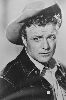

Country:United States, 122 minutes
Spoken languages:
Genres:Crime, Drama, Action, Thriller
Director(s):Burt Reynolds
Writer(s):William Diehl, Gerald Di Pego
Video Codec:Unknown
Number: 988


Certification:R
Storyline:
Police officer Tom Sharky gets busted back to working vice, where he happens upon a scandalous conspiracy involving a local politician. Sharky's new 'machine' gathers evidence while Sharky falls in love with a woman he has never met.
Cast: 


Medium: Original DVD,
Loaned: No
Aspect ratio: Unknown